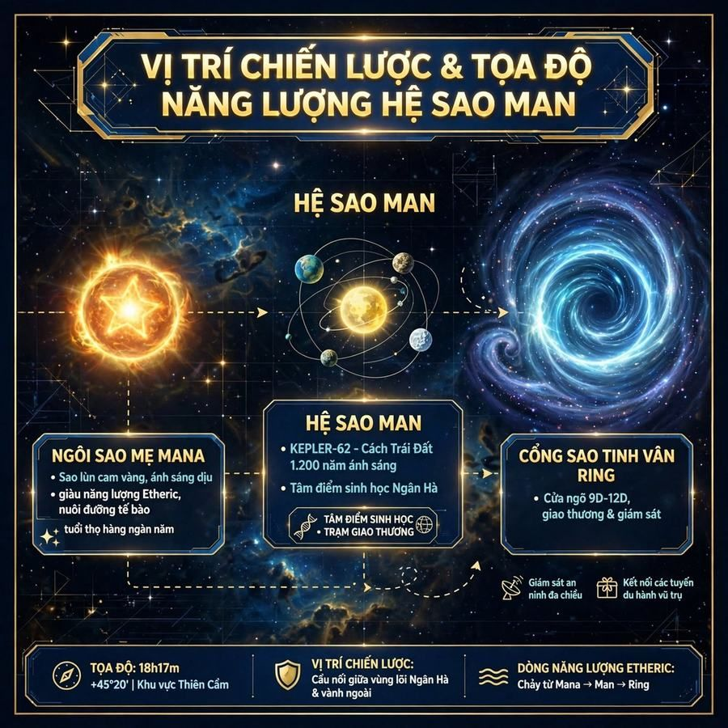
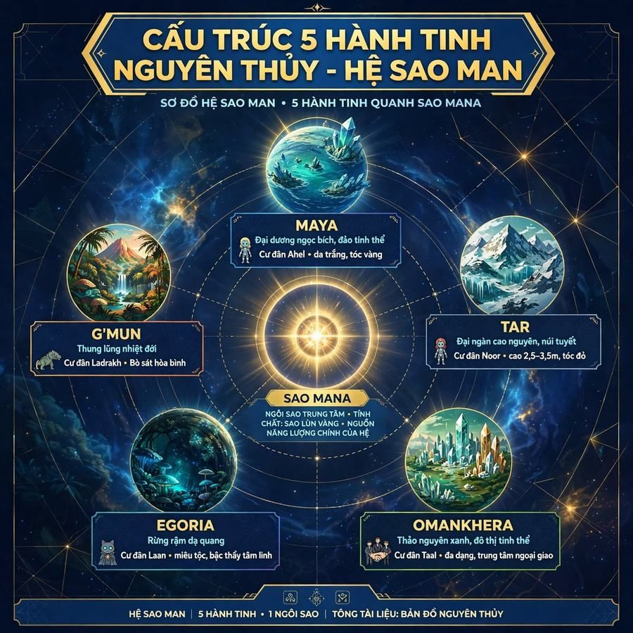
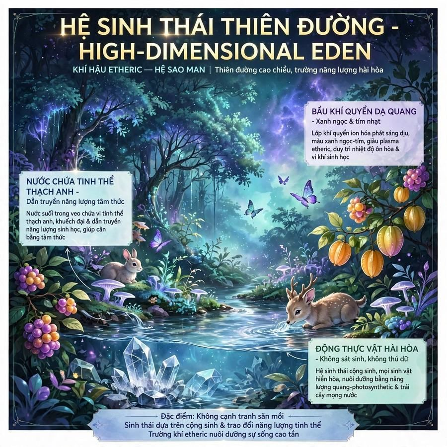
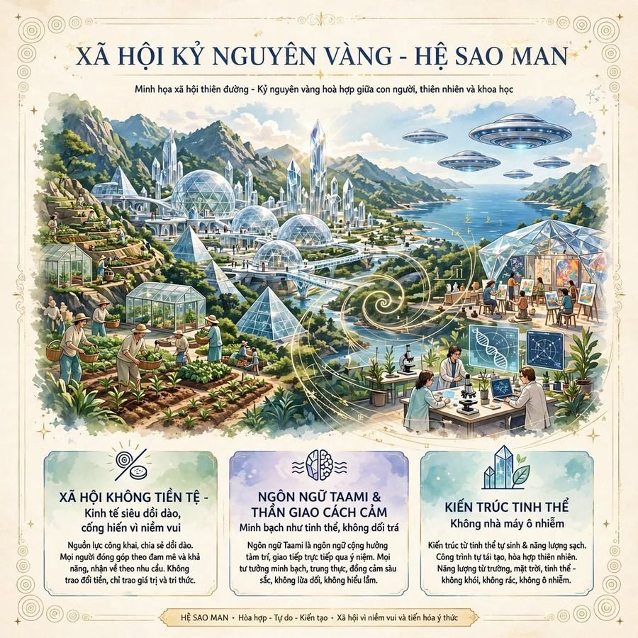
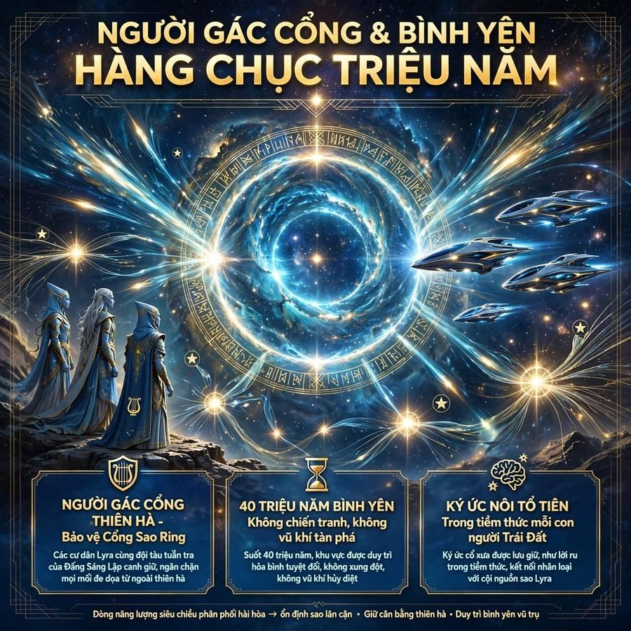

Trang chủ / Chuyên đề 1: Tiền Sử Thiên Hà / Kỳ 3
Chuyên đề 1 · Kỳ 3 / 90
HỆ SAO MAN (KEPLER-62) — NÔI TỔ TIÊN CỦA LOÀI NGƯỜI THIÊN HÀ

Ở hai kỳ trước, chúng ta đã cùng nhau khám phá khoảnh khắc khởi nguyên khi dòng ý thức Toàn Thể từ Nguồn đi qua Lăng Kính Của Lyra để phân rã thành 7 dải mật độ nhận thức, cũng như quy trình thiết kế bản thiết kế di truyền 12 chuỗi DNA của Liên minh Các Đấng Sáng Lập.
Nhưng sau khi bản thiết kế di truyền dạng người nguyên thủy được hoàn thiện, một câu hỏi quan trọng được đặt ra: Nơi nào trong không gian bao la của dải Ngân Hà đã được chọn làm "phòng thí nghiệm thiên đường" đầu tiên để nuôi dưỡng những thế hệ con người sơ khởi? Môi trường sống, khí hậu và cấu trúc của 5 hành tinh nguyên thủy tại cội nguồn Lyra trông như thế nào? Và lý do tại sao hệ sao Man lại sở hữu một vị trí chiến lược linh thiêng đến vậy trong lịch sử phát triển của Vũ trụ?
Hãy cùng quay ngược dòng thời gian hàng chục triệu năm, tiến vào tâm điểm của chòm sao Thiên Cầm để khám phá trọn vẹn Hệ Sao Man — Nôi Tổ Tiên Nguyên Thủy Của Loài Người Thiên Hà!
✦ ✦ ✦1. VỊ TRÍ CHIẾN LƯỢC VÀ TỌA ĐỘ NĂNG LƯỢNG CỦA HỆ SAO MAN
Trong các bản đồ thiên văn cổ xưa của các văn minh thiên hà, hệ sao Man (mà khoa học Trái Đất ngày nay định danh là Kepler-62, nằm cách Trái Đất khoảng 1.200 năm ánh sáng trong chòm sao Lyra) đóng vai trò là tâm điểm sinh học của toàn bộ dải Ngân Hà.
A. Ngôi Sao Mẹ Mana — Nguồn Ánh Sáng Tinh Khiết
- Đặc tính Thiên văn: Ngôi sao mẹ Mana là một sao lùn cam-vàng mang dải tần số bức xạ vô cùng dịu nhẹ. Nhiệt độ bề mặt và dải quang phổ của Mana không phát ra các tia bức xạ tử ngoại thô hay các đợt bùng nổ năng lượng hỗn loạn.
- Tần số Etheric Trù phú: Ánh sáng của Mana thẩm thấu một lượng lớn năng lượng Etheric tự nhiên. Dải năng lượng này đóng vai trò như một "nguồn dinh dưỡng sinh học quang phổ", giúp các tế bào dạng người phát triển tối đa thể chất, duy trì tuổi thọ hàng ngàn năm và kích hoạt trọn vẹn các giác quan thần giao cách cảm.
B. Tọa độ Cổng Sao Tinh Vân Ring (Ring Nebula Stargate)
- Trục Giao Thoa Vũ Trụ: Hệ sao Man nằm ngay sát Cổng Xoáy không-thời gian siêu lớn tại Tinh vân Ring. Đây là một điểm kỳ dị tự nhiên cho phép dòng chảy năng lượng từ các chiều không gian cao hơn (9D–12D) đi thẳng vào dải vật lý.
- Cửa ngõ Giao thương & Giám sát: Nhờ vị trí Cổng Sao này, hệ sao Man trở thành điểm kết nối lý tưởng để các hạm đội của Các Đấng Sáng Lập di chuyển qua lại, giám sát sự phát triển của hệ sinh thái và bảo vệ nôi tổ tiên khỏi các tác động bất lợi từ bên ngoài.

2. CẤU TRÚC 5 HÀNH TINH NGUYÊN THỦY TRONG HỆ SAO MAN
Xung quanh ngôi sao mẹ Mana là hệ thống 5 hành tinh tuyệt đẹp. Mỗi hành tinh sở hữu một hệ sinh thái, điều kiện khí hậu và địa hình riêng biệt, tạo nên môi trường sống hoàn hảo cho 4 dòng người nguyên thủy và 1 dòng sinh mệnh bản địa hòa bình.
A. Hành tinh Maya — Đại Dương Ngọc Bích & Các Hòn Đảo Tinh Thể
- Địa hình & Khí hậu: Maya là một thế giới đại dương bao la với những quần đảo rực rỡ và những bãi biển cát trắng mịn chứa hàm lượng thạch anh cao. Khí hậu tại Maya quanh năm ấm áp, ôn hòa với những làn gió biển mang dải năng lượng chữa lành.
- Cư dân Sinh sống: Maya chính là quê hương nôi sinh học của chủng tộc Ahel — những người sở hữu làn da trắng sáng, mái tóc vàng kim hoặc bạch kim và đôi mắt xanh lam trong veo. Họ xây dựng các đô thị sinh thái kết hợp giữa kiến trúc tinh thể và các công trình nổi trên mặt nước.
B. Hành tinh Tar (Elhaziel) — Đại Ngàn Cao Nguyên & Không Khí Hùng Vĩ
- Địa hình & Khí hậu: Tar sở hữu những dãy núi tuyết hùng vĩ, những cao nguyên rộng lớn ngút ngàn và những rừng cây cổ thụ cao hàng trăm mét. Bầu không khí tại Tar rất giàu oxy tinh khiết và từ trường đất mạnh mẽ.
- Cư dân Sinh sống: Hành tinh Tar là nơi sinh trưởng của chủng tộc Noor — dòng người sở hữu vóc dáng cao lớn sừng sững (từ 2,5m đến 3,5m), thể lực phi thường và mái tóc màu đỏ rực hoặc vàng rơm. Họ sống hòa hợp với rừng núi, phát triển văn hóa tôn trọng sự linh thiêng của Trái Đất và thiên nhiên.
C. Hành tinh Omankhera — Thảo Nguyên Xanh & Đô Thị Tinh Thể Đa Dạng
- Địa hình & Khí hậu: Omankhera mang địa hình phong phú nhất với các đồng bằng xanh mướt, sông hồ uốn lượn và khí hậu 4 mùa ôn hòa.
- Cư dân Sinh sống: Omankhera là cội nguồn của chủng tộc Taal — dòng người mang sự đa dạng nhất về màu da (da đồng, da nâu, da trắng), màu tóc và màu mắt. Họ là những người sở hữu tư duy ngoại giao, nghệ thuật và kỹ thuật phát triển bậc nhất. Nơi đây trở thành trung tâm giao lưu văn hóa và hành chính chính của toàn hệ sao Man.
D. Hành tinh Egoria — Rừng Rậm Nguyên Sinh & Bờ Biển Huyền Bí
- Địa hình & Khí hậu: Egoria được bao phủ bởi những khu rừng rậm nguyên sinh rực rỡ sắc màu, nơi thảm thực vật tự phát ra ánh sáng dạ quang (bioluminescent) vào ban đêm.
- Cư dân Sinh sống: Egoria là nhà của chủng tộc Laan — sinh mệnh dạng người mang các đường nét quý phái của loài mèo (khuôn mặt mang nét uy nghi, đôi mắt tinh anh và phản ứng giác quan cực kỳ nhạy bén). Họ là những bậc thầy về tâm linh, trực giác và nghệ thuật điều biến năng lượng Etheric.
E. Hành tinh G'mun — Thung Lũng Nhiệt Đới & Chủng Bò Sát Hòa Bình Ladrakh
- Địa hình & Khí hậu: G'mun là hành tinh nằm gần sao mẹ nhất, có khí hậu nhiệt đới ấm áp, nhiều hang động tự nhiên và nguồn nước khoáng nóng trù phú.
- Cư dân Sinh sống: G'mun là nơi cư ngụ bản địa của chủng tộc Ladrakh — một dòng sinh mệnh dạng Bò sát (Reptilian) hoàn toàn hòa bình, tiến hóa tự nhiên tại hệ sao Man. Họ sống hòa thuận, hợp tác sinh thái tuyệt đối với 4 chủng tộc người trên các hành tinh lân cận.

3. MÔI TRƯỜNG SINH THÁI THIÊN ĐƯỜNG VÀ KHÍ HẬU ETHERIC NGUYÊN THỦY
Thiên nhiên tại hệ sao Man không giống bất kỳ môi trường khắc nghiệt nào mà chúng ta thấy ở dải 3D hiện tại. Đó là một Hệ Sinh Thái Thiên Đường Siêu Chiều (High-Dimensional Eden Ecosystem).
A. Nguồn Nước & Bầu Khí Quyển Tự Phát Quang
- Nước Chứa Tinh Thể Thạch Anh: Nguồn nước trên các hành tinh thuộc hệ sao Man chứa hàm lượng lớn các vi phân tử thạch anh lỏng tự nhiên. Nước không chỉ để uống mà đóng vai trò như một chất dẫn truyền năng lượng tâm thức, giúp cơ thể sinh học luôn ở trạng thái thanh lọc tuyệt đối.
- Bầu Khí Quyển Dạ Quang: Ban đêm tại các hành tinh không hề tối tăm mịt mùng. Bầu khí quyển phát ra ánh sáng huỳnh quang màu xanh ngọc và tím nhạt do sự tương tác giữa từ trường sao mẹ Mana và hạt ion năng lượng trong không khí.
B. Hệ Động Thực Vật Hài Hòa Không Có Sát Sinh
- Thảo Mộc Nạp Năng Lượng Ánh Sáng: Thảm thực vật tại đây sinh trưởng nhờ hấp thụ trực tiếp nguồn năng lượng Etheric và ánh sáng quang phổ. Các loài cây trái cho thu hoạch những quả mọng giàu dinh dưỡng mà không cần phân bón hóa học.
- Động Vật Thân Thiện & Không Có Loài Ăn Thịt Hung Hãn: Các loài động vật tại hệ sao Man sống cộng sinh hòa bình. Do dải tần số năng lượng của hành tinh ở mức rất cao, không có sự xuất hiện của các loài thú dữ ăn thịt hay sự tàn sát lẫn nhau trong tự nhiên.

4. CẤU TRÚC XÃ HỘI VÀ ĐỜI SỐNG SINH HOẠT TRONG KỶ NGUYÊN VÀNG
Trong suốt Kỷ nguyên Vàng kéo dài hàng chục triệu năm, cư dân tại hệ sao Man đã xây dựng một mô hình xã hội chuẩn mực cho toàn thể Ngân Hà.
A. Xã Hội Không Tiền Tệ & Không Có Sự Nô Dịch
- Nền Kinh Tế Siêu Dồi Dào (Post-Scarcity): Mọi nhu cầu về nhà ở, thực phẩm, trang phục và di chuyển đều được thiên nhiên trù phú và công nghệ năng lượng Điểm Không đáp ứng đầy đủ cho tất cả mọi người.
- Sự Cống Hiến Vì Niềm Vui: Không ai phải làm việc kiệt sức để tồn tại. Cư dân dành thời gian nghiên cứu khoa học, sáng tạo nghệ thuật, trồng trọt vườn tược và phát triển tiềm năng tâm linh. Mỗi cá nhân đóng góp cho cộng đồng dựa trên tài năng và đam mê thuần khiết của bản thân.
B. Ngôn Ngữ Ngoại Giao Chung Taami & Thần Giao Cách Cảm
- Cổ Ngữ Taami: Để giao tiếp giữa 5 hành tinh và hàng trăm chủng tộc khác nhau, ngôn ngữ Taami được sử dụng như một ngôn ngữ ngoại giao chuẩn mực. Đây là ngôn ngữ dựa trên âm điệu tần số Solfeggio, nơi mỗi từ ngữ khi phát ra đều mang dải hình ảnh và cảm xúc tương ứng.
- Giao Tiếp Thần Giao Cách Cảm: Bên cạnh Taami, việc giao tiếp qua sóng não (telepathy) và truyền tải cảm xúc qua luân xa tim diễn ra tự nhiên như việc hít thở hàng ngày. Sự dối trá hay thao túng hoàn toàn không thể tồn tại trong một xã hội mà mọi suy nghĩ đều minh bạch như tinh thể!
C. Kiến Trúc Hòa Nhập Với Thiên Nhiên
- Không Có Nhà Máy Ô Nhiễm: Cư dân không xây dựng các khu công nghiệp xám xịt hay các tòa nhà bê tông thô kệch. Các công trình kiến trúc được đúc từ hợp kim tinh thể tự nhiên, có hình dáng vòm tròn, kim tự tháp hoặc xoắn ốc tỷ lệ vàng, hòa lẫn mượt mà vào cảnh quan rừng núi và biển cả.
- Phương Tiện Di Chuyển Điện Từ: Việc di chuyển giữa các hành tinh trong hệ sao Man được thực hiện bằng các phi thuyền đĩa bay chạy bằng năng lượng từ trường xoáy, không hề phát ra tiếng ồn hay khí thải độc hại.

5. VAI TRÒ NGƯỜI GÁC CỔNG VÀ BÌNH YÊN HÀNG CHỤC TRIỆU NĂM
Bên cạnh việc phát triển văn hóa và nghệ thuật, cư dân hệ sao Man còn gánh vác một trọng trách vũ trụ thiêng liêng: Đóng vai trò là Những Người Gác Cổng Thiên Hà (Gatekeepers of the Ring Nebula).
A. Bảo Vệ Cửa Ngõ Không-Thời Gian
- Các thế hệ cư dân Lyra phối hợp với các đội tàu tuần tra của Các Đấng Sáng Lập để duy trì sự an toàn cho Cổng Sao Tinh vân Ring.
- Họ đảm bảo dải năng lượng siêu chiều đi qua Cổng Sao luôn được phân phối hài hòa đến các dải sao lân cận, ngăn chặn các sự cố đứt gãy từ trường hay các thực thể không gian tiêu cực xâm nhập.
B. Hàng Chục Triệu Năm Trong Sự Bình Yên Tuyệt Đối
- Trong suốt hơn 40 triệu năm, hệ sao Man chưa từng biết đến chiến tranh, vũ khí tàn phá hay sự xâm lược từ bên ngoài.
- Trẻ sinh ra được nuôi dưỡng trong tình yêu thương vô điều kiện, người già chuyển di dải mật độ trong sự thanh thản. Cả một nền văn minh lớn mạnh, tràn ngập ánh sáng và sự minh triết, trở thành biểu tượng rực rỡ nhất cho gia đình hình người trong toàn thể Vũ trụ.

6. LỜI KẾT KỲ 3: KÝ ỨC NÔI TỔ TIÊN TRONG TIỀM THỨC CỦA BẠN
Hệ sao Man (Kepler-62) không phải là một câu chuyện viễn tưởng xa lạ. Đó chính là Ký ức Nôi Tổ Tiên (Ancestral Home Memory) đang nằm sâu trong tiềm thức của mỗi linh hồn con người Trái Đất:
- Nỗi Khao Khát Thiên Đường Nguyên Thủy: Sự khao khát của con người về một thế giới hòa bình, thiên nhiên xanh mát, không có chiến tranh hay nợ nần chính là sự hoài niệm tự nhiên về cuộc sống thiên đường mà chúng ta từng trải qua tại hệ sao Man!
- Dòng Máu Di Truyền Nguyên Thủy: Bộ gen của bạn mang sự kết tinh từ 4 chủng tộc người huyền thoại tại Lyra. Khi bạn sống trong sự từ bi, yêu thương thiên nhiên và phát triển trực giác, bạn đang trực tiếp kích hoạt lại dải năng lượng nguyên thủy của nôi tổ tiên!